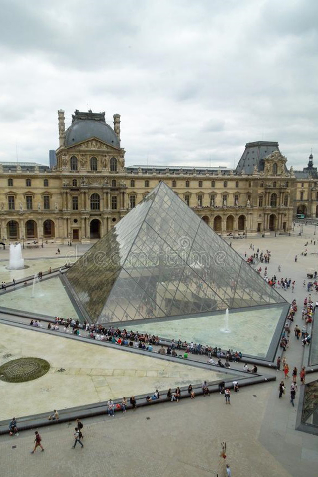
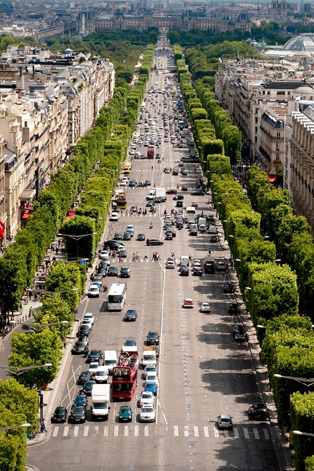
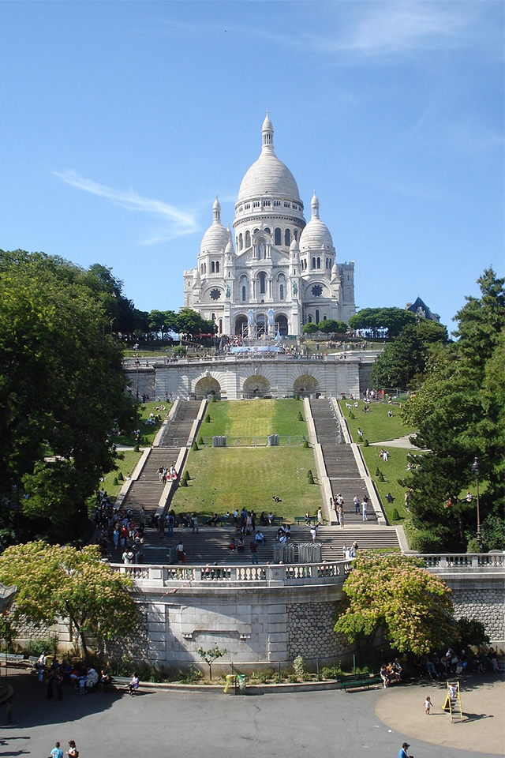
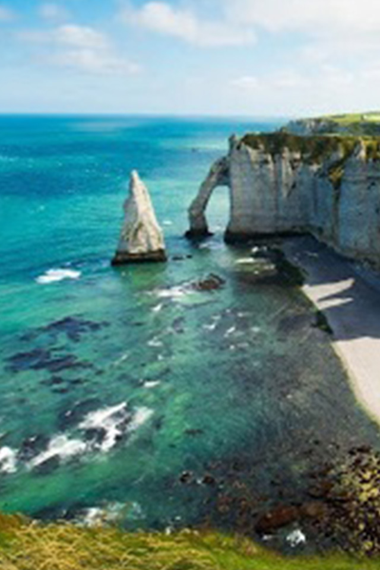
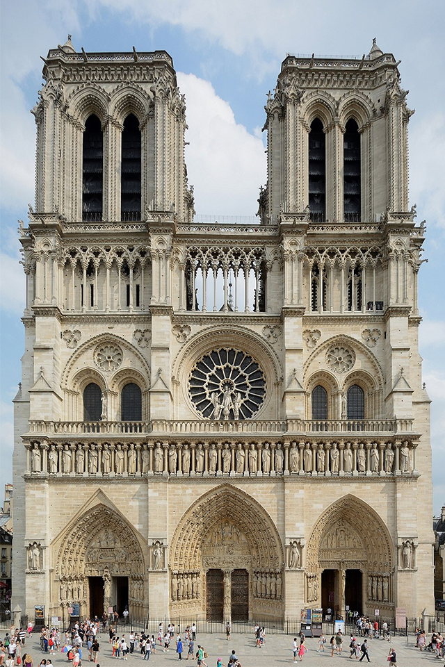
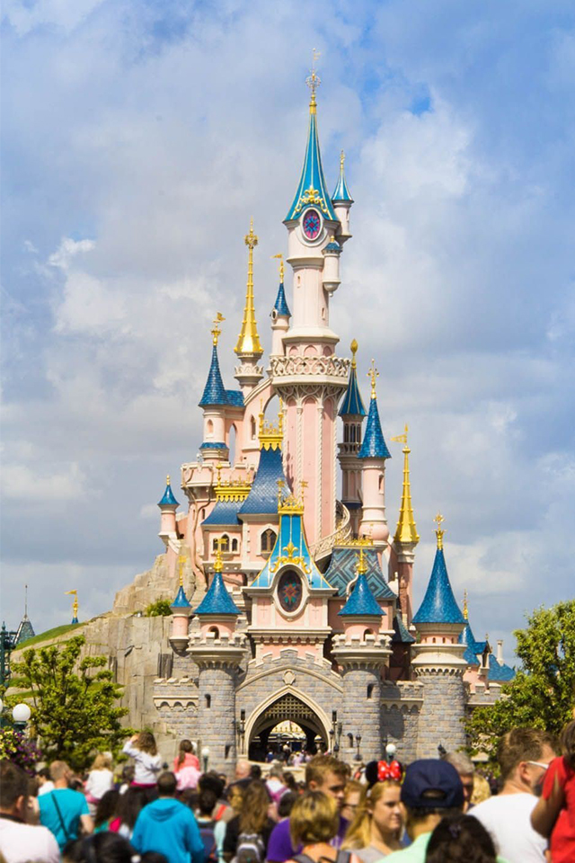

Torre Eiffel
Es un importante monumento, símbolo de la ciudad y de todo el país que se encuentra situada en el extremo del Campo de Marte, en el VII Distrito de París.

Este es uno de los museos más importantes del mundo y está en el I Distrito de París, dentro del Palacio de Louvre.
Museo del Louvre
Este es uno de los museos más importantes del mundo y está en el I Distrito de París, dentro del Palacio de Louvre.
Arco del Triunfo
Este monumento se encuentra ubicado en la Plaza de la Concordia, en el VIII distrito de París.

Palacio de Versalles
El Palacio de Versalles (en francés Château de Versailles) fue una antigua residencia real ubicada en el municipio de Versalles y su construcción fue dispuesta por Luis XIV.

Los Campos Elíseos, es la avenida más grande de París. Mide 1880 metros de longitud, y se extiende desde el Arco del Triunfo hasta la Plaza de la Concordia, dentro del VIII distrito de París.
Campos Eliseos
Los Campos Elíseos, es la avenida más grande de París. Mide 1880 metros de longitud, y se extiende desde el Arco del Triunfo hasta la Plaza de la Concordia, dentro del VIII distrito de París.

Basílica de
Esta es una importante iglesia ubicada en el distrito XVIII de París, en la colina de Montmartre, dedicada al Sagrado Corazón de Jesús.
Basílica de
Sacre Coeur
Esta es una importante iglesia ubicada en el distrito XVIII de París, en la colina de Montmartre, dedicada al Sagrado Corazón de Jesús.

A lo largo de la costa de Francia podrás encontrar una gran cantidad de hermosas playas para que las disfrutes durante tu viaje.
Playas de Francia
A lo largo de la costa de Francia podrás encontrar una gran cantidad de hermosas playas para que las disfrutes durante tu viaje.

Es una de las más antiguas iglesias de estilo gótico. Está dedicada a la Virgen María, de donde deriva su nombre, pues Notre-Dame significa Nuestra Señora.
Notre Dame
Es una de las más antiguas iglesias de estilo gótico. Está dedicada a la Virgen María, de donde deriva su nombre, pues Notre-Dame significa Nuestra Señora.

Museo D'Orsay
Conocido en el mundo entero por su rica colección de arte impresionista. Sus colecciones representan todas las formas de expresión, de la pintura a la arquitectura, pasando por la escultura, las artes decorativas, la fotografía.

Es un complejo turístico recreacional y de vacaciones de 22,3 km² situado en Marne-la-Vallée. Es conocido por ser la recreacion de DisneyWorld pero en Europa.
Eurodisney
Es un complejo turístico recreacional y de vacaciones de 22,3 km² situado en Marne-la-Vallée. Es conocido por ser la recreacion de DisneyWorld pero en Europa.